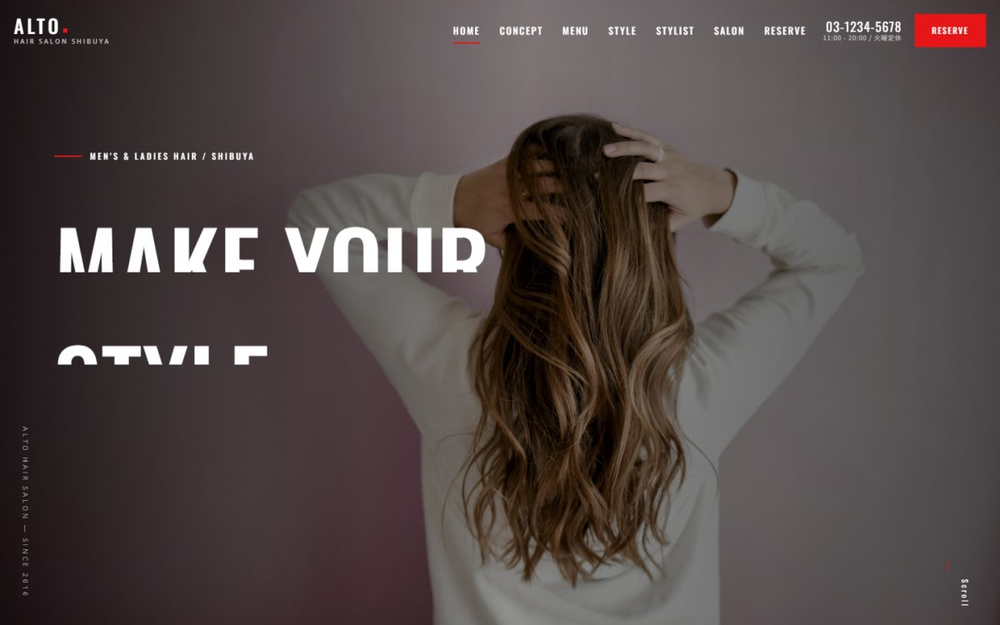
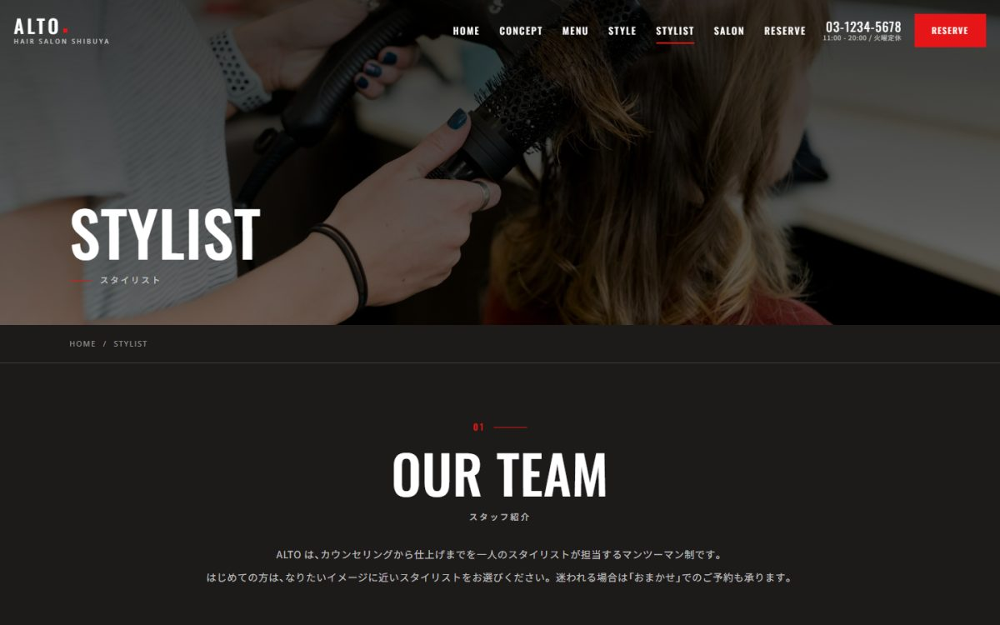

| 種別 | 美容室／架空の店舗を想定した自主制作 |
|---|---|
| 担当範囲 | 企画・デザイン・実装 |
| 使用技術 | HTML ／ CSS（BEM設計）／ JavaScript ／ Bootstrap ／ Swiper |
| ページ数 | 4ページ（トップ・メニュー・スタイリスト・お問い合わせ） |
写真が主役になる設計
美容室のサイトは、文章よりも写真で伝わる部分が大きいと考えました。余白を広く取り、文字は必要最小限に絞って、写真そのものが目に入る構成にしています。
予約につながる導線
スタイリスト紹介には得意な施術を載せ、指名予約につながるようにしました。電話番号は常に画面上部に出しており、スマートフォンではタップで発信できます。
写真選びで学んだこと
最初は海外の素材サイトから選んだ写真を使っていましたが、日本の美容室のサイトとして見たときに違和感が出ました。掲載する人物が日本人に見えるかどうかは、想像以上にサイトの説得力を左右します。全点を日本人の写真に差し替えたうえ、小さいサイズでは判断を誤ることが分かったため、以降は必ず大きく表示して確認するようにしています。